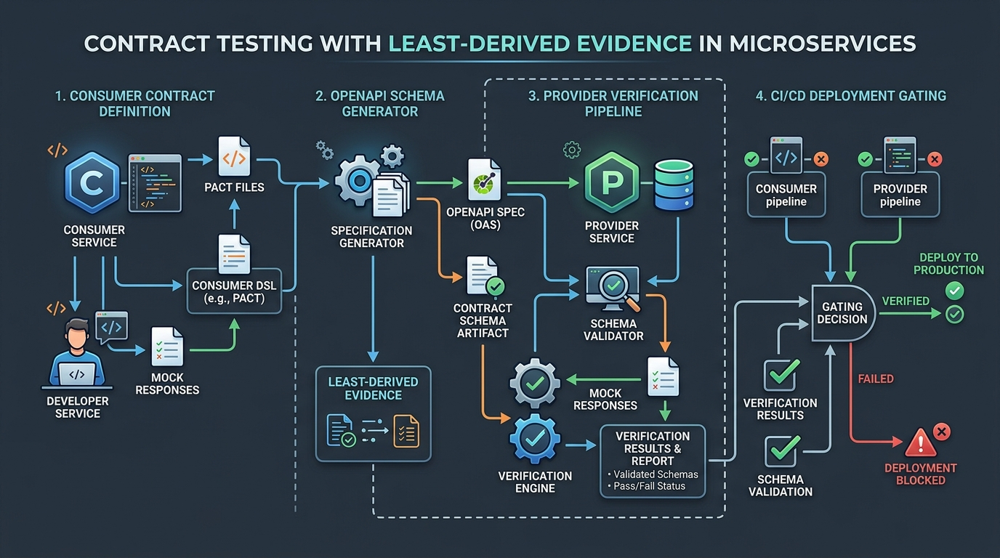

When 100% Test Coverage Lies: Contract Faults and the Least-Derived Evidence Principle

366 Passing Tests on an Impossible Specification
During a formal audit of an access control engine, our test runner reported 366 passing tests, 0 failures, and 100% branch coverage.
Every single test was green. And the system was completely broken.
The specification stated: *A grant is expired if its status enum equals SKIPPED_TTL_EXPIRED.*
The test suite verified that when the enum was set, the grant was treated as expired.
The bug wasn't in the implementation. The bug was in the contract: nothing in the system verified whether the grant's actual expiration timestamp had passed. An agent could set the enum on a grant with 14 days of valid lifetime remaining, and the test suite happily validated the state change.
┌────────────────────────────────────────────────────────┐
│ Implementation Correctness │
│ Does the code faithfully execute the spec? │
│ (Passed: 366 / 366 Tests) │
└───────────────────────────┬────────────────────────────┘
│
▼
┌────────────────────────────────────────────────────────┐
│ Specification Correctness │
│ Does the contract accurately model reality? │
│ ❌ FAILED: Derived Enum Contradicted TTL │
└────────────────────────────────────────────────────────┘
The Three Iterations of Flawed System Truth
When building access control and state transition engines, teams make the same three progression mistakes:
1. Free-Text String Matching (Fragile)
Early prototypes check string notes:if "ttl expired" in grant.notes: return False. A single typo or localization change silently disables expiration checks.
2. Typed Enums Without Evidence (Self-Assertion)
Teams "upgrade" strings to Enums (GrantStatus.EXPIRED). But an Enum is just a self-authored claim. Without checking the underlying timestamps, an Enum allows subsystems to assert expired states on active tokens.
3. Rounded Floats & Display Fields (Precision Loss)
Teams comparettl_remaining_hours <= 0.0. But calculating remaining hours as a float introduces precision artifacts:
- In Python,
-0.0 >= 0evaluates toTrue. - Floating-point
nanbypasses standard comparison operators (nan <= 0isFalse). - Rounding to 2 decimal places creates 36-second vulnerability windows.
The Fix: The Least-Derived Evidence Principle
To prevent specification bugs, state decisions must follow the Least-Derived Evidence Principle: *Every authorization decision must be computed directly from raw, immutable timestamps at evaluation time.*
┌────────────────────────────────────────────────────────┐
│ Least-Derived Evidence Architecture │
│ │
│ [ Current Epoch ms ] ───┐ │
│ ├──▶ [ Timestamp Comparator ] │
│ [ Grant Expires Epoch ] ──┘ │ │
│ ▼ │
│ Boolean Verdict │
└────────────────────────────────────────────────────────┘
Implementing Ground-Truth Invariant Checks
Never store or trust derived verdict labels in audit logs. Store the raw immutable timestamps so third-party auditors can recompute verdicts deterministically:
import math
from typing import Dict, Any
def verify_grant_active(decision_epoch_ms: int, expires_at_epoch_ms: int) -> Dict[str, Any]:
"""
Validates grant status strictly using raw integer epoch millisecond timestamps.
Rejects non-finite values and eliminates float rounding artifacts.
"""
if not (math.isfinite(decision_epoch_ms) and math.isfinite(expires_at_epoch_ms)):
raise ValueError("Non-finite timestamp detected in authorization pipeline.")
is_active = decision_epoch_ms < expires_at_epoch_ms
return {
"is_active": is_active,
"evidence": {
"decision_epoch_ms": decision_epoch_ms,
"expires_at_epoch_ms": expires_at_epoch_ms,
"delta_ms": expires_at_epoch_ms - decision_epoch_ms
}
}
Comparison: Evolution of System Truth Contracts
| Contract Version | Source of Authority | Evaluation Pattern | Core Failure Mode | Test Result |
|---|---|---|---|---|
| v1: Free Text | Human Note String | "ttl expired" in notes | Text mutations break logic | Green |
| v2: Typed Enum | Enum Field | status == EXPIRED | Enum contradicts raw TTL | Green (366 passing) |
| v3: Rounded Float | Display Float | ttl_hours <= 0.0 | -0.0 & NaN comparison bugs | Green |
| v4: Least-Derived | Raw Epoch Timestamps | current_ms < expires_ms | None (Deterministic) | Mathematically Sound |
Common Contract Architecture Mistakes
- Using Display Values in Logic: Reusing numbers formatted for human dashboards in backend authorization decisions.
- Assuming Type Checkers Catch Logic Flaws: TypeScript interfaces and Python Enums ensure types match; they cannot detect semantic contradictions in specifications.
- Self-Authored Verdict Labels: Allowing a worker agent to write its own pass/fail conclusion into audit records instead of recording raw inputs.
Conclusion & Key Takeaways
Green tests verify that an implementation respects its specification, but they cannot verify that the specification is correct. By anchoring authorization decisions to least-derived evidence, checking numeric bounds, and submitting contracts to adversarial review, engineering teams can eliminate silent specification flaws before they reach production.
Frequently Asked Questions
What does "the tests passed, the contract was wrong" mean?
It means the code accurately implemented all written requirements and passed all automated tests, but the underlying specification contained logical errors.
What is the Least-Derived Evidence Principle?
It is the architectural rule that state decisions must be evaluated using the rawest data available rather than cached summaries or derived labels.
Why is trusting enums in state transitions risky?
Enums are self-assertions; without validating the underlying ground truth fields, an enum can assert an expired state on an active entity.
How does floating-point rounding create security vulnerabilities?
Rounding timestamps to two decimal places creates 36-second granularity windows where negative zero (`-0.0`) can cause expired grants to evaluate as active.
How can engineering teams detect specification defects early?
Teams should conduct adversarial peer reviews, test edge-case inputs (such as `NaN` and negative zero), and separate contract authorship from code testing.
Preventing RAG API Hallucinations: Least-Derived Evidence & Grounding
How to prevent hallucinations in RAG-powered API applications by enforcing least-derived evidence and strict grounding policies.
Read article →Building an AI Evaluation Harness with Benchmark Provenance
Designing reproducible AI evaluation harnesses with benchmark provenance, versioned test suites, and regression tracking.
Read article →